| Main page |
|
Index |
| Bug list |
| Documentation |
| Doc errors |
| Examples |
| 2D Gallery |
| 3D Gallery |
|
Packages
|
|
References
|
|
CTAN Search CTAN: Germany Ireland United Kingdom USA |
|
Statistics |
|
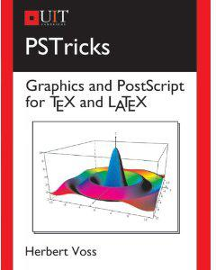 Extended translation of the the 5th edition |
|
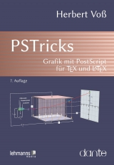 the 7th edition, total of 960 colored pages |
|
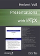 2nd edition, 212 pages, includes 32 color pages |
|
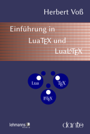 |
|
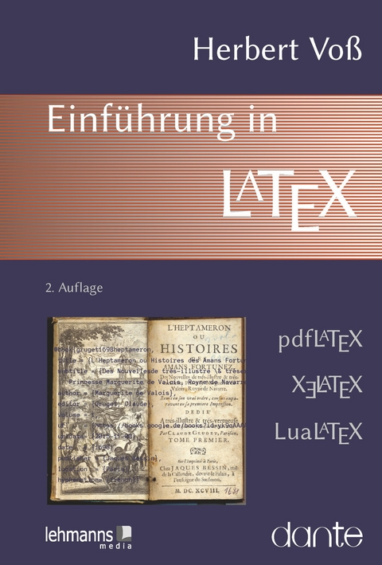 |
|
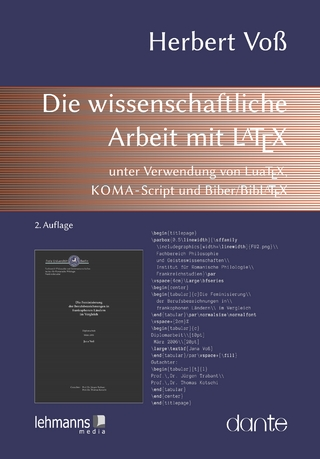 |
|
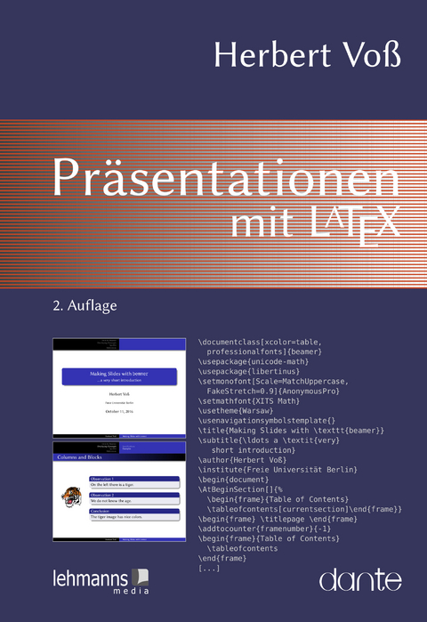 |
|
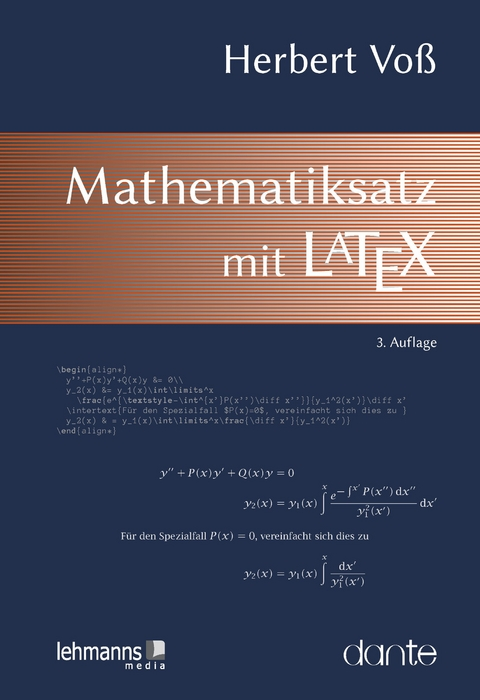 |
|
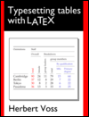 |
|
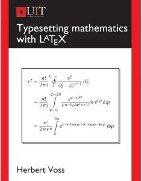 |
|
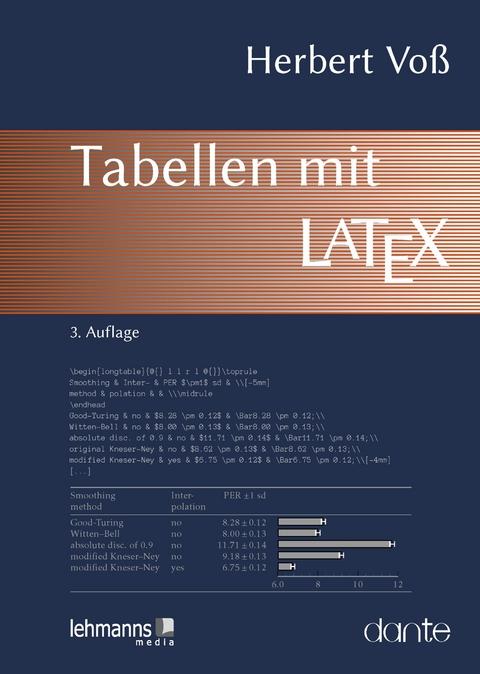 |
|
|
If you do not find what you were searching for then have a look at the mailing list archive
Read the latest news of updates for pstricks.tex!
Important: PSTricks packages are divided into the core and contributed ones.
The core is pstricks.
Frequently done errors ...
- Using PSTricks together with TikZ causes a problem after the last update of the dvi driver of TikZ when using package auto-pst-pdf. Here is an example of how to use the package without a problem.
- Do not choose
pstricks.texas a file name, it is the name of the main PSTricks package! Windows users pay attention here, there is no difference in lower or upper case letters. - Missing number, treated as zero This is the default error message when you are using
symbolic node names without enabled
\SpecialCoorafter loading the pst-node package! - PSTricks is PostScript Tricks, viewing your PS or PDF output with a PS or PDF viewer is appropriate. Nearly all DVI-viewers cannot show rotations or movings, hence not the correct output.
- You cannot run your files with pdftex/pdflatex, use lualatex instead or the sequence latex->dvips->ps2pdf, or see topic pdfoutput
- If you get a rotated page then use always
ps2pdf -dAutoRotagePages=/None .... See also here for Windows user linestyle=dasheddoesn't work after an update ofpstricks.tex. You should update alsopstricks.proandpstricks.sty.- Error message:
no room for a new dimen. See UK TeX-FAQ for what to do ... - \pspicture[0.5] ... doesn't work anymore! Use instead [shift=*] Read the docs!
- If you have a problem with the optional argument
[pdf], then use always
\usepackage{auto-pst-pdf,pstricks}or\usepackage{auto-pst-pdf,pstricks-add}or ...
|
News ... |
Playground ... :-) |
|---|---|
|
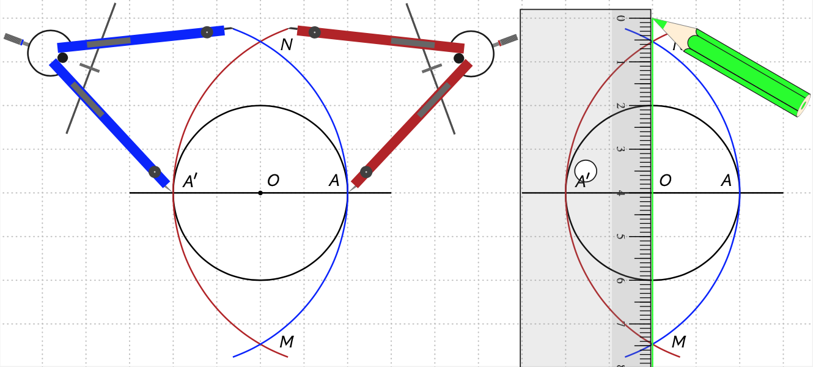 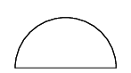 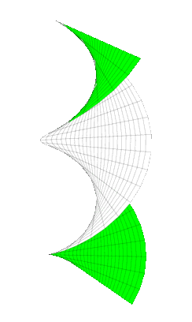 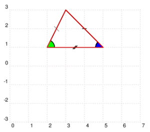  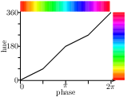 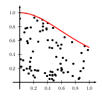 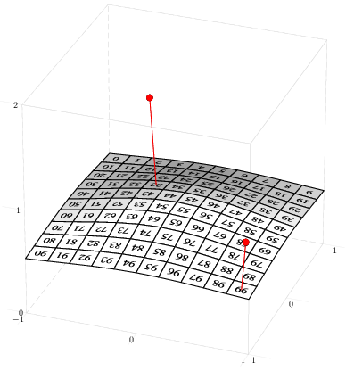 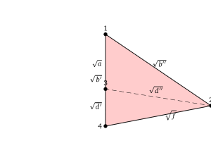 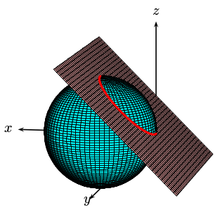 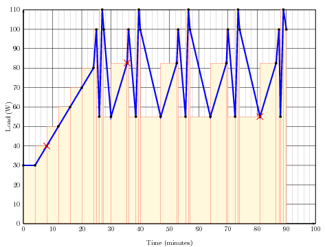 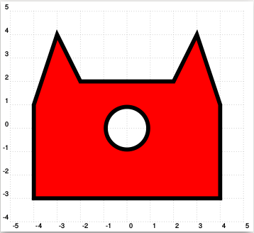 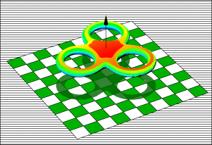 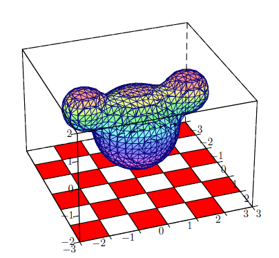 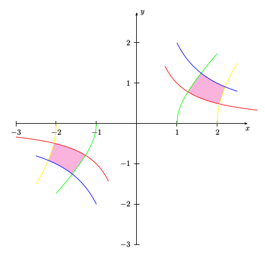 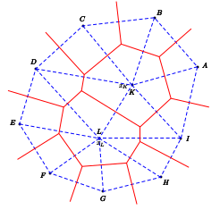 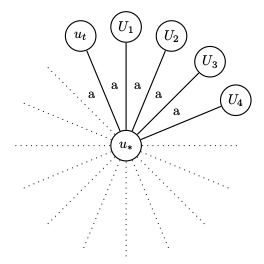 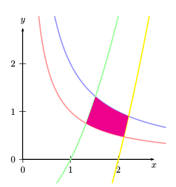 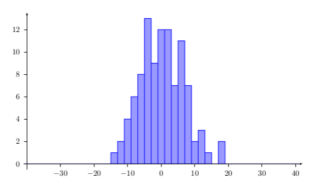 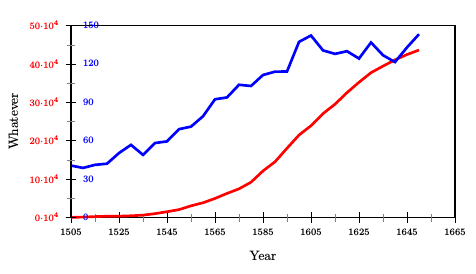 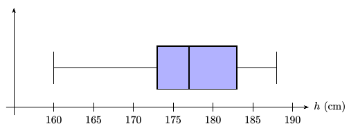 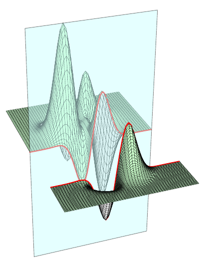 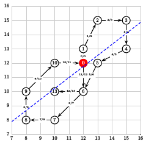 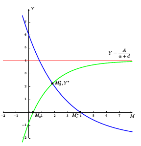 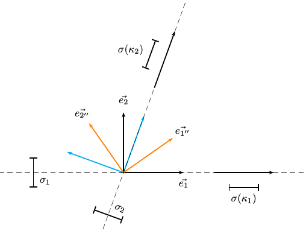 |
 View Statistics |
since 2016-12-19
$Id: main 1616 2021-11-14 16:41:38Z hvoss $
| About TUG |
| Home |
| Aims/benefits |
| Join TUG |
|
Contact us
|
| Home |
| Join DANTE |
|
FAQ (in german)
|
|
package authors L. Akhmadeeva C. Bersch V. Bos J.-C. Charpentier M. Chupin F. Delgosha A. Delmotte M. Diamantini P. Drechsler J. Frampton M. Giese J. Gilg D. Girou A. Grahn C. Jorssen J.-G. Luque M. Luque P. Megr�t T. N�hring R. Niepraschk A. Ristow D. Rodriguez J.-M. Sarlat A. Schmittbuhl M. Sharpe T. S�ll T. Van Zandt B: Veytsman J.-P. Vignault H. Vo� |